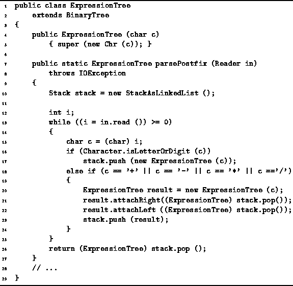
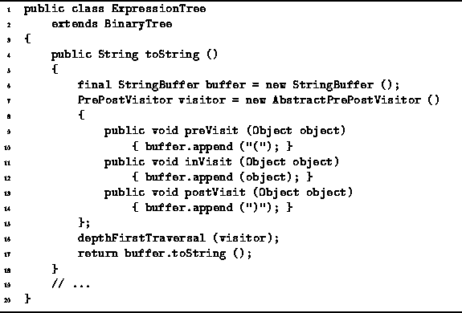

Data Structures and Algorithms
with Object-Oriented Design Patterns in Java
Data Structures and Algorithms
with Object-Oriented Design Patterns in Java
Program  introduces the ExpressionTree class.
This class provides a static method,
called parsePostfix,
which translates a postfix expression to an infix expression
using the method described above.
This method reads an expression from the an input stream
one character at at time.
The expression is assumed to be a syntactically valid
postfix expression comprised of
single-digit numbers, single-letter variables,
and the binary operators +, -, *, and /.
introduces the ExpressionTree class.
This class provides a static method,
called parsePostfix,
which translates a postfix expression to an infix expression
using the method described above.
This method reads an expression from the an input stream
one character at at time.
The expression is assumed to be a syntactically valid
postfix expression comprised of
single-digit numbers, single-letter variables,
and the binary operators +, -, *, and /.

Program: Binary tree application--postfix to infix conversion.
Since only binary operators are allowed,
the resulting expression tree is a binary tree.
Consequently,
the ExpressionTree class extends the BinaryTree class
introduced in Program .
The main program loop, lines 13-25, reads characters from the input stream one at a time. If a letter or a digit is found, a new tree with the character as its root is created and pushed onto the stack (line 17). If an operator is found, a new tree is created with the operator as its root (line 20). Next, two trees are popped from the stack and attached to the new tree which is then pushed onto the stack (lines 21-23).
When the parsePostfix method encounters the end-of-file, its main loop terminates. The resulting expression tree is popped from the stack and returned from the parsePostfix method.
Program defines the toString method
for the ExpressionTree class.
This method can be used to print out the expression
represented by the tree.

Program: Binary tree application--printing infix expressions.
The toString method constructs a string that represents
the expression using a PrePostVisitor
which does a depth-first traversal
and accumulates its result in a string buffer like this:
At each non-terminal node of the expression tree,
the depth-first traversal first calls preVisit,
which appends a left parenthesis to the string buffer.
In between the traversals of the left and right subtrees,
the inVisit method is called,
which appends a textual representation of the object contained within the node
to the string buffer.
Finally, after traversing the right subtree,
postVisit appends a right parenthesis to the string buffer.
Given the input ab/cd-e*+,
the program constructs the expression tree as shown in Figure ,
and then forms the infix expression

The running time of the parsePostfix method depends upon the number of symbols in the input. The running time for one iteration the main loop is O(1). Therefore, the time required to construct the expression tree given n input symbols is O(n). The depthFirstTraversal method visits each node of the expression tree exactly once and a constant amount of work is required to print a node. As a result, printing the infix expression is also O(n) where n is the number of input symbols.
The output expression contains all of the input symbols
plus the parentheses added by the PutInfix method.
It can be shown that a valid postfix expression that contains n symbols,
always has (n-1)/2 binary operators and (n+1)/2 operands
(Exercise ).
Hence, the expression tree contains (n-1)/2 non-terminal nodes
and since a pair of parentheses is added for each non-terminal node
in the expression tree,
the output string contains 2n-1=O(n) symbols altogether.
Therefore, the overall running time needed to translate
a postfix expression comprised of n symbols to an infix expression is O(n).
 Copyright © 1998 by Bruno R. Preiss, P.Eng. All rights reserved.
Copyright © 1998 by Bruno R. Preiss, P.Eng. All rights reserved.